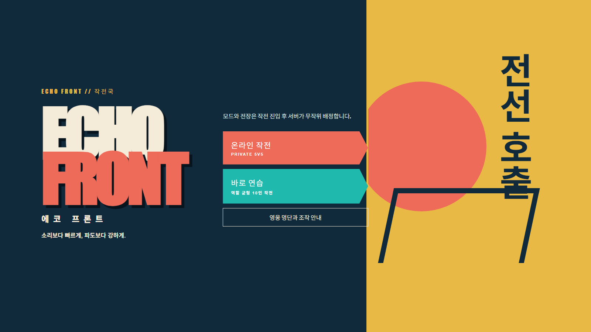
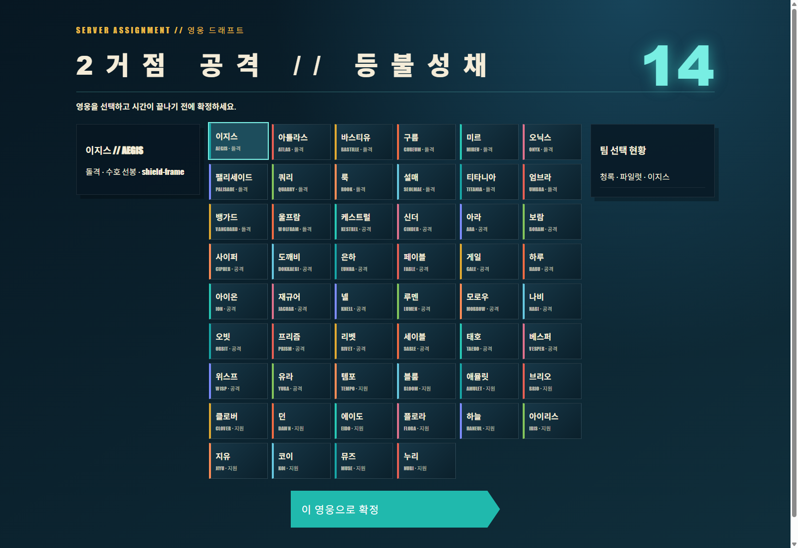

서버 권위형 전투
Socket.IO 서버가 경기 상태와 두 가지 볼 스포츠 모드까지 권위 있게 판정해 모든 참가자가 같은 결과를 공유합니다.
로컬 플레이 가능 빌드 BROWSER · SERVER REQUIRED
52명의 오리지널 영웅과 역할 균형 봇이 11개의 절차 생성 전장에서 맞붙는 서버 권위형 5v5 브라우저 히어로 슈터입니다.

Tank 14명, Damage 24명, Support 14명으로 구성한 52명의 영웅은 이름, 외형, 능력, 역할을 모두 독자적으로 설계했습니다. 외부 공식 게임의 에셋·이름·로어·모델·오디오를 사용하지 않았습니다.
Socket.IO 서버가 경기 상태와 두 가지 볼 스포츠 모드까지 권위 있게 판정해 모든 참가자가 같은 결과를 공유합니다.
7개의 5v5 목표 모드와 2개의 권위형 볼 스포츠 모드가 교전 거리, 팀 이동, 목표 우선순위를 바꿉니다.
봇은 단순히 빈자리를 채우는 대신 Tank, Damage, Support 구성을 고려해 팀 역할의 균형을 맞춥니다.
Three.js 설치 패키지로 구현한 11개의 로우폴리 맵이 각 모드의 시야, 동선, 목표 공간을 구성합니다.

게임·영웅·모드·맵 시스템을 기획하고 Three.js 클라이언트, Socket.IO 권위 서버, 역할 균형 봇과 15초 영웅 드래프트를 구현했습니다. 최신 전체 테스트 결과는 96/96 PASS입니다.